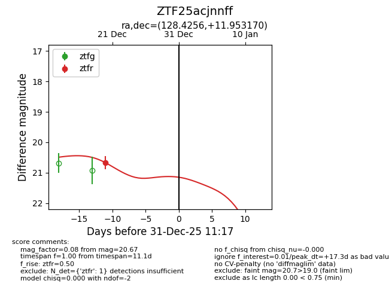
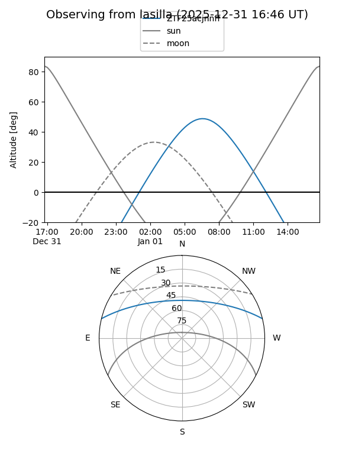
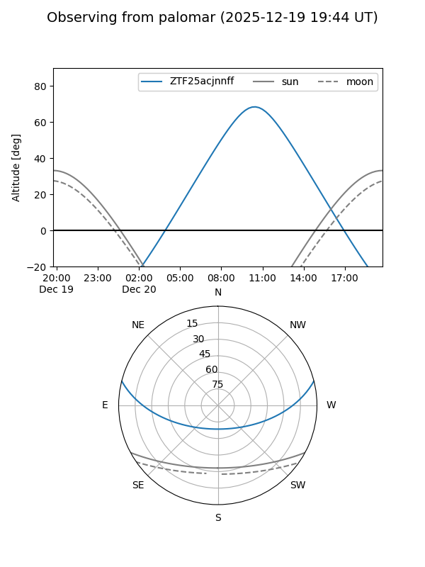
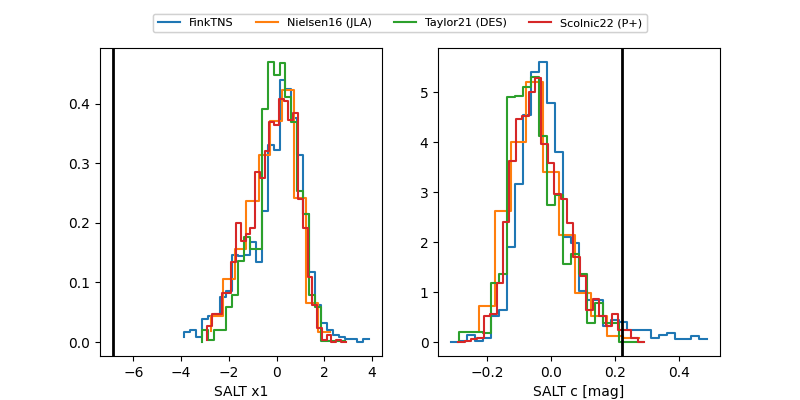

ZTF25acjnnff
Target ZTF25acjnnff at 2025-12-20 12:04
Aliases and brokers:
FINK: fink-portal.org/ZTF25acjnnff
Lasair: lasair-ztf.lsst.ac.uk/objects/ZTF25acjnnff
ALeRCE: alerce.online/object/ZTF25acjnnff
alt names
ZTF25acjnnff (ztf,fink_ztf)
Coordinates:
equatorial (ra, dec) = 128.4256,+11.95317
equatorial (HMS+DMS) = 08:33:42.14,+11:57:11.41
galactic (l, b) = (213.4634,+28.04653)
Flags:
Photometry:
last ztfr=20.67
1 ztfr detections
Lightcurve

Visibility


Additional plots
